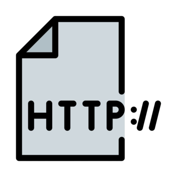
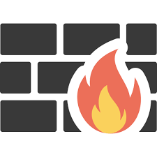
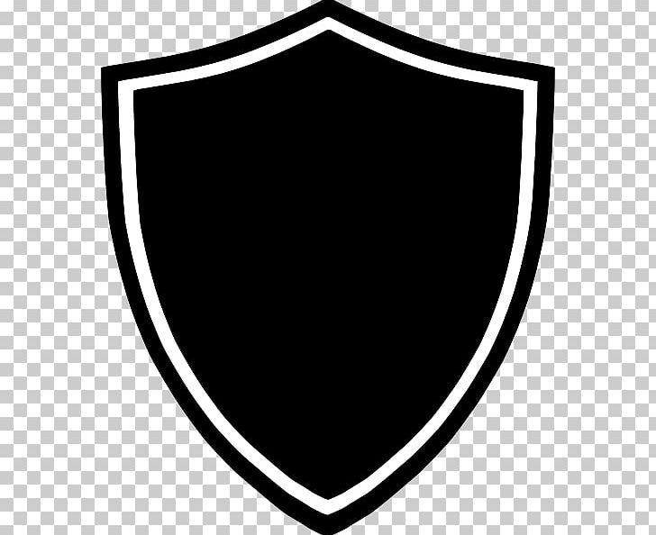
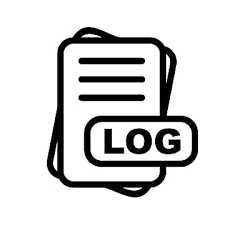

3. Sécurisation d’une API contre les attaques
Voici les bonnes pratiques à suivre pour protéger une API REST contre les principales menaces :
Authentification sécurisée
Utiliser OAuth2 ou JWT pour vérifier l’identité des utilisateurs et limiter l’accès.

Chiffrement avec HTTPS
Obliger l’usage du protocole sécurisé HTTPS pour chiffrer toutes les communications.

Rate Limiting
Limiter le nombre de requêtes par minute pour éviter les attaques DDoS ou brute-force.

Validation des entrées
Vérifier et nettoyer les données entrantes pour éviter les injections SQL ou XSS.

Surveillance et journalisation
Logger les tentatives d’accès suspectes et les erreurs pour analyse.